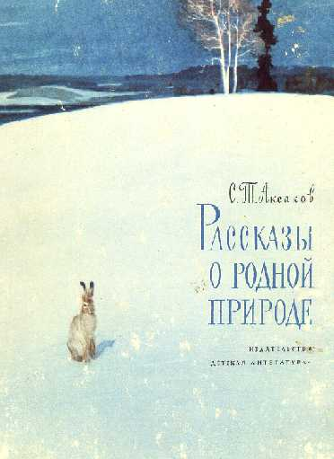
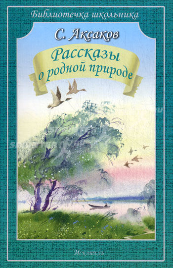

Аксаков, С.Т. Рассказы о родной природе
Аксаков, С.Т. Рассказы о родной природе [Текст]/ С. Т. Аксаков; худож. Г. Никольский. – М.: Дет. лит., 1981. – 143с.: ил.

В книге читателю предлагаются избранные отрывки из произведений Сергея Тимофеевича Аксакова, посвященные родной природе. В книге 10 разделов: "Зима", "Весна", "Лето", "Осень", "Вода", "Болота", "Степь", "Лес", "Охота", "Уженье".
Любовь к природе С. Аксаков унаследовал от отца. С детства он полюбил рыбную ловлю, охоту, собирание ягод, проявил удивительную наблюдательность относительно нравов птиц, рыб и зверей. Именно со степной природой связаны его первые впечатления и увлечения, составившие содержание его будущих произведений. Крестьянскую жизнь, крестьянский труд он описывал не только с состраданием, но и с уважением. Его произведения и сейчас являются своеобразной энциклопедией Оренбургского края, по которой можно изучить и природу, и население, какими они были полтора века назад.
